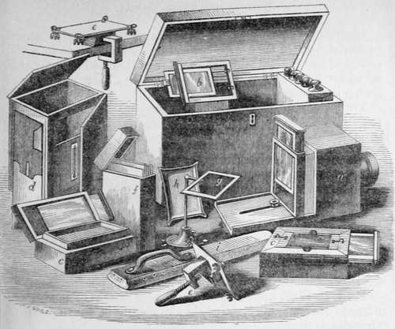

Chapter I. Early Researches Ox The Chemical Action Of The Solar Rays
Description
This section is from the book "A Manual Of Photography", by Robert Hunt. Also available from Amazon: A Manual of Photography.
Chapter I. Early Researches Ox The Chemical Action Of The Solar Rays
It is instructive to trace the progress of a discovery, from the first indication of a truth, to the period of its full development, and its application to purposes of ornament or utility. The progress of discovery is ordinarily slow, and it often happens that a great fact is allowed to lie dormant for years, or for ages, which, when eventually revived, is found to render a fine interpretation of some of Nature's harmonious phenomena, and to minister to the wants or the pleasures of existence. Of this position, Photography is peculiarly illustrative.
The philosophers of antiquity appear to have had their attention excited by many of the more striking characters of light: yet we have no account of their having observed any of its chemical influences, although its action on coloured bodies—deepening their colour in some cases, and discharging it in others— must have been of every-day occurrence. The only facts which they have recorded are, that some precious stones, particularly the amethyst and the opal, lost their sparkle by prolonged exposure to the rays of the sun.
It has been stated—but on doubtful authority—that the jugglers of India were for many ages in possession of a secret process, by which, they were enabled in a brief space to copy the profile of any individual by the agency of light. However this may have been, it does not appear that they know anything of such a process in the present day.
The alchemists, amidst the multiplicity of their processes—in their vain search for the philosopher's stone and the elixir vitcestumbled upon a peculiar combination of silver with chlorine, which they called horn-silver—as, by fusion, the white powder they obtained by precipitation was converted into a horn-like substance. They observed that this horn-silver was blackened by light, and as they taught that "silver only differed from gold in being mercury interpenetrated by the sulphureous principle of the sun's rays," they concluded that this change was the commencement of the process by which their dreams were to be realized. Failing, however, to produce gold from horn-silver, the fact of its blackening was simply recorded, and no further investigations were made into this remarkable phenomenon.
Petit, in 1722, noticed that solutions of nitrate of potash and muriate of ammonia crystallized more readily in the light than they did in darkness.
The illustrious Scheele (1777), in his excellent Traité de l'Air et du Feu, gave the world the first philosophical examination of this peculiar change in a salt of silver, and proved the dissimilar powers of the different rays of light in effecting this change. He writes, "It is well known that the solution of silver in acid of nitre poured on a piece of chalk, and exposed to the beams of the sun, grows black. The light of the sun reflected from a white wall has the same effect, but more slowly. Heat without light has no effect on this mixture." Again, " Fix a glass prism at the window, and let the refracted sun-beams tall on the floor; in this coloured light put a paper strewed with luna cornua. and you will observe that this horn-silver grows sooner black in the violet ray than in any of the other rays".
Senebier repeated these experiments, and he states that lie found chloride of silver darkened in the violet ray in fifteen seconds to a shade which required the action of the red ray for twenty minutes. He also experimented on the influence of light in bleaching wax.
In the Philosophical Transactions for 1798 will be found a memoir by Count Rumford, entitled, "An Inquiry concerning the Chemical Properties that have been attributed to Light." In this paper a number of experiments are brought forward to prove that all the effects produced upon metallic solutions by bright sunshine, can be obtained by a prolonged exposure to a temperature of 2108 Fahrenheit. We are now, however, in a position to show that the chemical effects produced by rays of dark heat, are of a very different character from those usually attributed to light. Mr. Robert Harrup, in a communication to Nicholson's Journal in 1802, refuted the experiment of Count Rumford, showing that several salts of mercury were reduced by light alone, and not heat.
In 1801, Ritter proved the existence of rays a considerable distance beyond the visible spectrum, which had the property of speedily blackening chloride of silver. These researches excited the attention of the scientific world : M. Bérard, Seebeck, Ber-thollet, and others, directed their attention to the peculiar condition of the different rays in relation to their luminous and chemical influences; while Sir William Herschel and Sir Henry Englefield investigated the calorific powers of the coloured rays, and were followed in these investigations by Seebeck and Wunsch. Dr. Wollaston pursued and published an interesting series of experiments on the decomposition effected by light on gum-guaiacum. He found that paper washed with a solution of this gum in spirits of wine, had its yellow colour rapidly changed to green by the violet rays, while the red rays had the property of restoring the yellow hue. Sir Humphry Davy observed that the puce-coloured oxide of lead became, when moistened, red by exposure to the red ray, and black when exposed to the violet ray; and that the green oxide of mercury, although not changed by the most refrangible rays, speedily became red in the least refrangible.
Morichini and Configliachi, M. Bérard, and more recently, Mrs. Somerville made some curious experiments on the power of the violet rays to induce magnetism in steel needles. Seebeck and Berzelius investigated this involved subject: it has again and again engaged the attention of experimentalists; but to the present time it must be regarded as an unsettled point, whether magnetism can be induced in steel by the solar rays.
Continue to:
- prev: Preface
- Table of Contents
- next: Early Researches Ox The Chemical Action Of The Solar Rays. Part 2